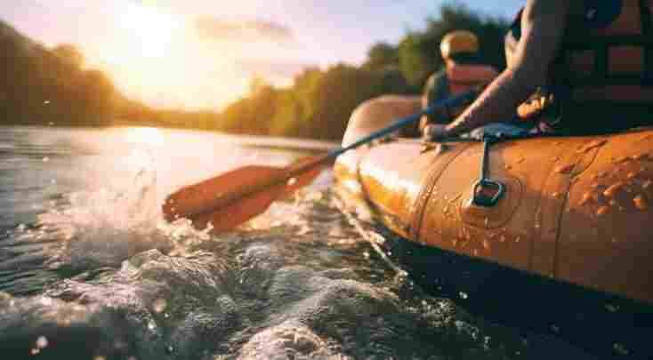
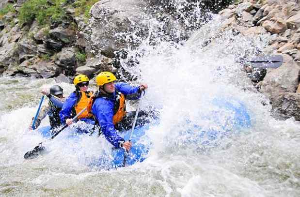

Wild Flow Rafting
History
Whitewater rafting began as a means of transportation and exploration in the early 19th century. It was first used by adventurers and explorers to navigate fast-moving rivers and access remote areas. In the mid-20th century, rafting evolved into a popular recreational activity as thrill-seekers and nature enthusiasts discovered the excitement of riding rapids. The development of modern inflatable rafts and improved safety gear made the sport more accessible, leading to its rise in popularity worldwide. Today, whitewater rafting is enjoyed by people of all skill levels, offering both adventure and a way to connect with nature.